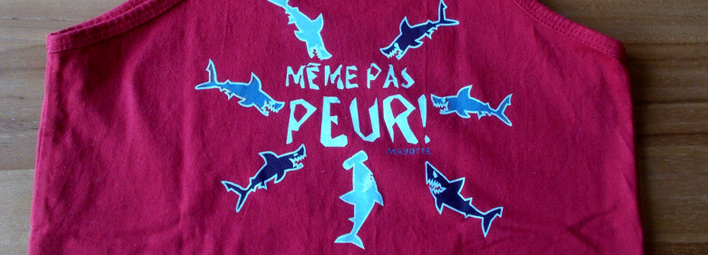
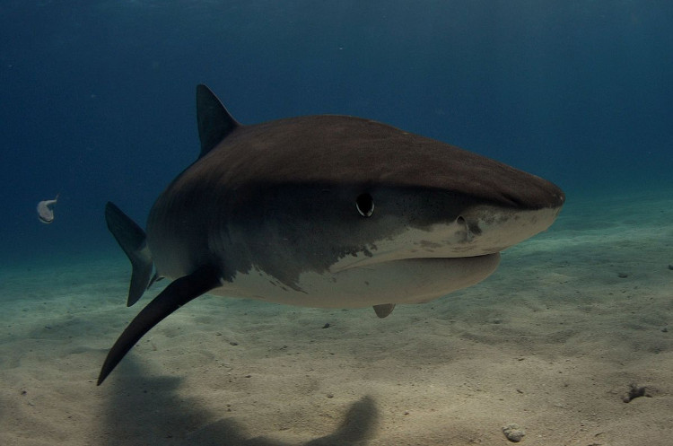
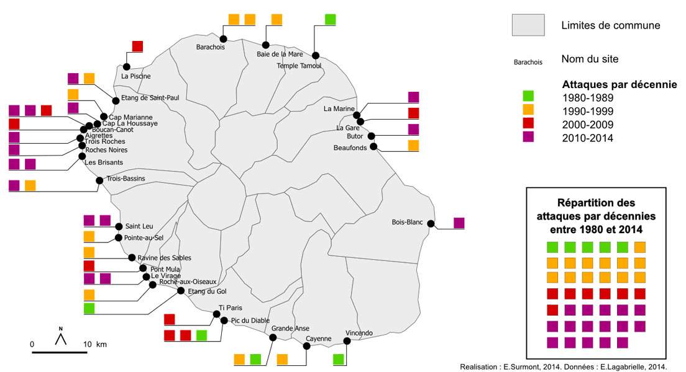

Un débardeur « même pas peur » de la marque Pardon! qui surfe sur la vague de la crise du requin.
En 1956, le commandant Cousteau sortait son film « le monde du silence » permettant au monde entier de découvrir la vie sous marine et à lui de gagner un oscar. Ce film documentaire montre quand même un massacre de requins à coup de pelles et de fusils par les marins de la Calipso. Quand on reprochait au marin préféré des français cette scène, il la replaçait dans son contexte, il disait qu'il fallait continuer de la montrer parce que les hommes étaient comme ça dans les années 50 mais ajoutait que ça se passerait différemment aujourd'hui (de son vivant, au temps où il était une icỏne de l'écologie).
Il est vrai que les hommes ont peur des grands squales, le film explique que chaque marin a une histoire violente, vraie ou fausse, liée aux requins et cela attise leur peur et parfois leur haine de ce gros poisson. La crise du requin à la Réunion c'est l'histoire de cette peur qui s'étend sur une île plus connue pour ses montagnes que son littoral mais qui se base sur des histoires vraies et tragiques.
Le 15 juin 2011, un jeune homme de 31 ans perd la vie alors qu'il faisait du bodyboard à Ti boucan. Trois mois plus tard, le champion de bodyboard Mathieu Schiller est attaqué par un requin au large de la plage de Boucan-Canot alors qu'il donnait des cours de surf. Son corps ne sera jamais retrouvé. Il n'y avait pas eu d'attaque mortelle depuis 4 ans et seulement deux depuis 2000. 2000, c'est l'année où la société sharkpod que je présentais ici arrêtait de commercialiser son dispositif anti-requin, échec commercial probablement dû au sentiment de risque nul. En cette année noire, il y a eu six rencontres avec des requins dont les deux fatales décrites plus haut. C'est ce que le rapport sur le tourisme de la cour des compte appelle la crise du requin.
Ce rapport parlait d'une baisse passagère du tourisme dûe à cette actualité tragique mais éphémère et souhaitait que le tourisme se développe à nouveau à la Réunion, une fois l’émotion dissipée.
Seulement les attaques de requins n'ont pas cessé et se sont même multipliées ces dernières années au point que la Réunion est devenue le littoral le plus risqué du monde. 2013 a aussi connu deux décès suite à des attaques de requins et la mort d'un garçon de 13 ans en 2015 a marqué les esprits au point que les politiques sont presque tous montés au créneau pour demander au gouvernement de faire quelque chose. Il faut dire que la crise touristique n'était pas passagère et une étude de 2014 (PDF) chiffre les pertes à 33 milions d'euros par an.
Même si les victimes des attaques sont bien moins nombreuses que les victimes de la route (presque 50 morts par ans à la Réunion selon la sécurité routière), l’image terrible des squales et l'émotion suscitée a chaque incident fait les gros titres et effraie les touristes.

Un jeune requin tigre, ici pris dans un lagon des Bahamas. photo: Albert Kok.
La réponse la plus fréquente est une sorte de vengeance aveugle qu'on appelle le prélèvement, c'est à dire la pêche d'un ou deux requin tigre ou requin bouledogue selon ce qu'on trouve. Seulement la pêche au requin est interdite depuis 1999 parce qu'une bactérie le rend impropre à la consommation. C'est donc souvent en bravant un interdit que des équipages de pêcheurs vengeurs prennent le large et reviennent avec un cadavre à exposer. Ces prélèvement ne satisfont que les tenants de la loi du talion (œil pour œil, dent pour dent) et ne règlent pas le problème. L'océan Indien est peuplé de milliers de requins qui voyagent où bon leur semble et les éradiquer de la Réunion équivaudrait à faire un impossible massacre dans toute la zone. Dans l’écosystème, le requin prélevé est déjà remplacé par un autre.
Malgré les récriminations, les pouvoirs publics ne restent pas les bras croisés. Depuis notamment les attaques meurtrières de 2011, un programme de marquage de plus de 80 requins a été mis en place, le programme CHARC, pour Connaissance de l’écologie et de l’HAbitat de deux espèces de Requins Côtiers non seulement pour les surveiller mais aussi pour les étudier afin de comprendre les raisons de leur présence à la Réunion et l'étendue de leur prolifération. L’étude s’est aussi intéressé aux requins marteau, aux tortues marines, aux baleines à bosse et aux dauphins qui partagent l’écosystème des requins, ainsi qu’aux activités humaines nautiques et à la météo qui pourraient avoir un effet sur le mode de vie de ces gros poissons. Son rapport final a été rendu public l'année dernière (mai 2015) et donne beaucoup de précisions sur le mode de vie des requins tigres et des requins bouldogues ainsi que les dates et horaires préférés ce ces squales pour s’approcher des côtes réunionnaises.
Il y a néanmoins peu de nouveautés dans ces conclusions, l'OMAR l'Observatoire Marin de la Réunion, qui n'observe pas que les requins, exposait déjà ces facteurs risques, notamment lieux et heures, deux ans plus tôt.
Publié juste après les attaques fatales d’une jeune baigneuse et d’un enfant qui faisait du surf, le rapport n’a pas répondu aux attentes de la population pour sa protection. Les zones et des heures privilégiées pour le regroupement de requins tigre et de requins bouledogue sur les côtes de l’île sont encore peu précises et rien ne peut laisser espérer une solution pour se baigner sans aucun risque.
L’Université de Floride collecte des données sur les attaques de requins dans le monde entier et les réunit dans une base de donnée, l’ISAF pour International Shark Attacks File. Bien que perfectible parce que l’information n’est pas toujours traité de la même manière d’un pays à l’autre, cette base offre le moyen de constater une sensible augmentation des attaques de requins dans le monde depuis dix ans même si le nombre d’attaques fatales est plutôt stable. Les données ne disent pas si cette augmentation est due à une augmentation de la population de requins, au développement des activités nautiques ou bien à une meilleure collecte des données.
Selon ces données la Réunion est un des premiers théâtres d’attaque mortelles après les États-Unis, l’Australie et l’Afrique du Sud. Ces pays étant beaucoup plus grands la mise en perspective par kilomètre de côte ou par nombre de surfeurs, place la Réunion comme premier lieu des attaques mortelles dans le monde. Même si cette mise en perspective ne met pas toute chose égale par ailleurs, elle n’encourage certainement pas la reprise du tourisme côtier à la Réunion.
Néanmoins, une autre mise en perspective rappelle qu’avec moins de 10 morts par an en moyenne, le requin est un des prédateur les moins meurtrier pour l’homme. Pour comparaison, les éléphants tuent 10 fois plus d’hommes et les hippopotames 50 fois plus, sans parler des insectes et serpents venimeux et même des moustiques capables de faire une hécatombe à un niveau épidémique.
Les mesures écologiques sont souvent pointées du doigt pour justifier la présence plus nombreuse des requins sur les rivages de la Réunion. D'abord il y a cette interdiction de pêcher le requin depuis 1999 qui logiquement, laisse en vie les requins alors que ce poisson n’a pas d’autre prédateur que l’homme. Les pêcheurs répètent souvent leur rôle de régulation des populations de requins pour pouvoir reprendre leur campagnes de pêche mais puisque cette viande est incombustible il est peu probable qu’une surpêche soit pratiquée au point d’avoir un réel effet régulateur. De plus, dans les régions du monde comme la les Caraïbes où le requin est chassé parce que comestible, l’ISAF a aussi constaté une augmentation des attaques de requins.
Autre projet décrié, Réserve naturelle marine de La Réunion, une zone protégée, créée en 2007 au sud ouest de l’île où les activités humaines en mer, notamment la pêche, sont limités ou interdites pour permettre à l’écosystème côtier de se renouveler. Les détracteurs de cette réserve estiment que puisque la zone est protégée, les poissons et autres animaux marins se multiplient et la zone se transformerait en une sorte de garde manger facile pour les requins qui viendraient se servir plus nombreux. Il est vrai que la plupart des rencontres homme-requins ont lieu sur cette zone entre Saint-Paul et L’Étang-Salé mais c’est aussi le littoral le plus propice aux activités nautiques donc le plus fréquenté.
Ce bout de littoral est protégé depuis 2007 et il est bon de rappeler qu’il y a déjà eu des années noires avec des attaques de requins fatales répétés depuis 1980 où les statistiques sont tenues publiques, Par exemple, entre le 22 mai 1992 et le 11 avril 1999, soit en moins de 7 ans, on dénombre 12 attaques dont 10 mortelles réparties aux quatre coins de l'île souligne une étude sur le risque requin à la Réunion.

Enfin les scientifiques indiquent qu’entre 2007 et 2013, la biomasse des récifs coralliens a bien augmenté (sans que je puisse trouver les chiffres) mais l’état de désastre écologique dans lequel il se trouve depuis les années 90 fait que cette masse poissonneuse reste très faible. Cette biomasse reste quatre fois moins élevée que dans les récifs coralliens comparables de l’océan Pacifique. Comme garde manger, on fait mieux qu'à la Réunion. Les scientifiques doutent que l’interdiction de la pêche sous-marine ait un réel impact sur le nombre d’attaques de requins.
Depuis, l’étude CHARC semble indiquer que le requin bouledogue ne vient pas à la Réunion pour se nourrir mais plutôt pour se reproduire. C’est d’ailleurs ce qui pourrait expliquer le nombre élevé d’attaques, les requins mâles en période de reproduction sont en forte compétition et beaucoup plus serveux qu’en période normale. Mais même sur ce point, les scientifiques restent très prudents.
Souvent interpellé, l'État a créé un Comité opérationnel de réduction du risque requin à La Réunion (CO4R) qui assure le suivi des projets scientifiques comme le projet CHARC. Il a mis en place en partenariat avec les acteurs tel que la ligue de surf Réunionnaise, les pêcheurs, les communes du littoral et l’Université de la Réunion un programme de captures de requins nommé CAPREQUINS pour Compréhension de la CAPturabilité des Requins côtiers. Ce programme vise à étudier le meilleur type de pêche pour attraper les requins tigre et bouledogue dangereux tout en préservant les autres espèces. Deux moyens sont mis en place: les drumlines et les palangre de fond. Cette dernière est une ligne tenue par un bateau, qui repose sur le fond marin avec plusieurs appâts. La drumline est une ligne verticale avec un appât unique et tenue par une bouée (souvent de type drum d’où le nom de drumline). Pour le dispositif Caprequins, la drumline est équipé d’un GPS, de capteurs et d’une caméra pour identifier la prise avant l’arrivée des équipes. Les requins capturés sont soit marqués, soit relachés soit prélevés (comprenez pêchés) en fonction de leur espèce, leur taille et leur état. Ce dispositif a été mis en place à proximité des sites nautiques du littoral réunionnais sauf dans la réserve marine où la pêche est interdite. Bien que critiqué par les associations écologistes parce qu’il tue des animaux, le dispositif a été prolongé en 2014 sous le nom de Cap requins 2 à la demande plusieurs communes du littoral réunionnais, (Saint-Paul, Trois-Bassins, Saint-Leu, Etang-Salé, Saint-Pierre, Saint-Joseph, Saint- Benoît).
Le CO4R a aussi mis en place des mesures de protections moins offensives en coordonnant l’action des communes pour la protection des zones de baignade et d’activités nautiques. L’Etang Salé et Saint-Paul ont vu la pose de filets de protection dont les mailles empêchent la venue des squales sur les sites de baignade. Hélas ces filets peuvent aussi capturer des animaux marins protégés comme les dauphins ou les tortues. Ils sont aussi parfois endommagés ou emportés par la houle ce qui demande une maintenance régulière. L’étude Lyonnaise cité plus haut parle de filets technologiques qui sont en fait des écrans d’ondes répulsives envoyés à intervalles réguliers. Ces dispositifs sont actuellement testés dans la région du Cap en Afrique-du-sud et aux Roches-Noires à Saint-Gilles.
La ligue de surf locale au aussi mis en place des vigies requins renforcées. Il s'agit de plongeurs en apnée qui surveillent la colonne d’eau avec des détecteurs de balises (pour les requins déjà marqués) soutenu par des personnes en surface et à terre. Un rapport de la CO4R envisage d’élargir cette solution dans d’autres communes.
Partout ailleurs, là où les sites ne sont pas sécurisés, le littoral est interdit à la baignade et aux sports de glisse. Cela peut paraître énorme et disproportionné mais en fait sur cette ỉle volcanique jeune, le nombre de sites de loisirs nautiques sont peu nombreux. La côte est principalement formée de roches sombres et déchiquetées plongeant dans une mer déchaînée. Saint-Pierre au sud de l’île travaille déjà à réduire le risque requin sur ses plages et nul doute que les plages de Manapany et Grand Anse sur la commune de Petite-île suivront.
La région Réunion a voulut se doter de techniques de pointe pour se prémunir du risque requin. Mais le gros des moyens pour réduire le risque requin restera concentré sur les zones les plus propices à la baignade c’est à dire en face des récifs coralliens au sud ouest. Récifs qui de par leur rareté et la diversité écologique qu’ils renferment justifie des mesures de préservation qui oblige tous les acteurs à laisser la faune tranquille et ne pas faire n’importe quoi contre les requins. C’est donc en concertation que les choses avancent.
Ce mois-ci je veux vous présenter Peur sur les plages. Du "risque requin" à la "crise requin" à La Réunion une étude qui reprend l’historique de ce que certains appellent la crise du requin depuis 2011. Menée par Emmanuelle Surmont, agrégée de géographie à l’École Normale Supérieure de Lyon, passe en revue tous les acteurs concernés des pêcheurs aux vacanciers en passant par les surfeurs, les groupes écologistes et les élus.
L’antagonisme est fort entre d’un coté les surfeurs, premières victimes des requins et les associations écologistes qui veulent protéger toute la vie des océans, même les requins ces mal-aimés en rappelant que les requins tigres et les requins bouledogues sont des espèces protégées. Les pêcheurs soutiennent les surfeurs et affirment que la pêche au requin devrait être rouverte pour assurer la sécurité des usagers de la mer. Derrière les écologistes, les scientifiques rappellent la nécessité de sauvegarder les récifs coralliens et leur faune et souligne le manque de connaissance permettant de conclure que la pêche est la solution.
Les associations écologistes ont un temps dénoncé l’attitude hédoniste des surfeurs qui s’arrogent le droit de modifier la nature pour s’adonner à leur sport. Mais l’organisation de ces derniers avec les vigies requin et peut-être leur attitude écologiste par ailleurs a fait évoluer cette mentalité.
L’étude cite l’association écologiste Shark Angels, devenue Shark Citizen (plus propice à la discussion) qui a effectué un virage idéologique en se rapprochant des surfeurs et travaillant avec eux pour réduire le risque requin tout en préservant le milieu sous-marin. Cette association considère aujourd’hui que les requins tigre et bouledogue n’ont pas leur place près des côtes et que seuls les requins de récifs comme le requin à pointe blanche, inoffensifs pour l’homme, sont bienvenus et contribuent à la préservation du récif corallien. Elle privilégie les filets de protection, de préférence électromagnétiques pour protéger les surfeurs comme les requins de plus petite taille…
Cette association de partenaires antagonistes n’est pas une généralité mais elle montre que quand il faut faire face à un problème, il est préférable de faire ensemble, la même chose et en concertation, plutôt que de se tirer dans les pattes. Ou dans les nageoires.